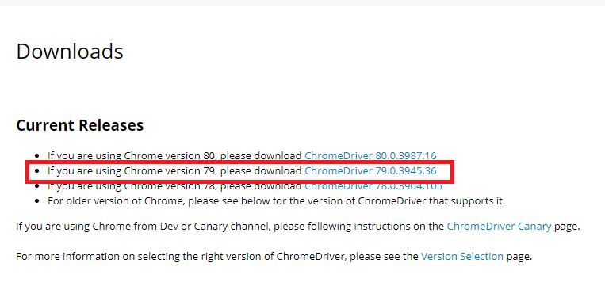

[Python] Seleniumライブラリを使う方法(自動ウェブテスト、ウェブスクレイピング)
こんにちは。明月です。
この投稿はPythonでSeleniumライブラリを使う方法(自動ウェブテスト、ウェブスクレイピング)に関する説明です。
まず、Seleniumとは、ウェブブラウザのドライバーに接続して制御できるライブラリで普通はウェブテストやウェブスクレイピング領域でよく使う技術です。
理解しやすく説明すると、Pythonのスクリプトで我々がよく使うクロームブラウザを制御することで特定ボタンを自動にクリックするかウェブページを移動しながらデータを収集してウェブテストやウェブスクレイピングで活用できるライブラリです。
以前にはC#でGeckoブラウザをブラウザをコントロールする方法に関して説明したことがあります。
link - [C#] Geckoライブラリを利用してウェブスクレイピングする方法
SeleniumとGeckoブラウザの差異はGeckoブラウザをブラウザのオブジェクトを取得してFormコントロールに付けて開発することで実際のブラウザを使うことではなくブラウザのオブジェクトライブラリを使うことです。
でも、Seleniumの場合はブラウザのライブラリを利用することではなく、もうPCにインストールされたウェブブラウザをSeleniumライブラリを通って制御することです。
これはもっとユーザ環境みたいに設定ができるのでGeckoブラウザより実際的なウェブテスト環境を構築することができる利点があります。
このSeleniumライブラリを使うためにはPythonからSeleniumライブラリをダウンロードしましょう。
pip install selenium
私はもうインストールされているとメッセージが出ました。
ライブラリをインストールしたら今回はドライバーをインストールしなければならないです。ここではクローム(Chrome)の例で説明します。FirefoxやIEに関しても同じ流れです。
まず、インストールされたクローム(Chrome)のバージョンを確認しましょう。
クローム(Chrome)ブラウザの右上のメニューをクリックしてHelp -> About Google Chromeを押下しましょう。
そうすると上のイメージ通りに現在のバージョンが表示されます。
下記のリンクに移動して小数点前のバージョンを合わせて選択しましょう。
link - https://sites.google.com/a/chromium.org/chromedriver/downloads

私の場合は79.xxxバージョンだったので、79.xxxをダウンロードしました。そしてウィンドウから使うので、ウィンドウバージョンをダウンロードしました。
圧縮ファイルにはchromedriver.exeがありますが、pythonを実行するファイルフォルダーにコピーして置きましょう。
ここまでSeleniumを使うための準備は完了しました。
これからソースを作成しましょう。
# seleniumモジュールを使う。
from selenium import webdriver
# driverを読み込む
driver = webdriver.Chrome('chromedriver.exe')
# ブラウザのサイズ設定
driver.set_window_size(500,500)
# クロームブラウザに接続するページを設定する。
driver.get('https://www.nowonbun.com')
# 待機時間設定(findでオブジェクトを探索する時に検索されなかったら待機する時間、秒単位)
driver.implicitly_wait(2)
# xpathでelementを探す。このxpathはブログの左上のメニューのボタン。
element = driver.find_element_by_xpath('/html/body/nav/button')
# クリックする。
element.click();
# xpathでelementを探す。このキーワードを検索ボックス。
element = driver.find_element_by_xpath('/html/body/aside/div[2]/input')
# データを入力
element.send_keys('python')
# xpathでelementを探す。この検索ボックス
element = driver.find_element_by_xpath('/html/body/aside/div[2]/button')
# クリックする。
element.click();
# 結果でCSSのエレメント取得
element = driver.find_element_by_css_selector("a[href='./220.html']")
# クリックする。 ボタンタグ以外はclickができない。scriptクリックで設定する。
driver.execute_script("arguments[0].click();", element)
# .articleの文字をpタグの属性をすべて取得する。
elements = driver.find_elements_by_css_selector(".article p");
# 内容をファイルに格納
with open("text.txt", "w" , encoding="utf-8") as handle:
for element in elements:
# 出力する。
print(element.text, file=handle)
# ブラウザを閉じる。
driver.close();
上のソースを実行するとchromeブラウザが実行して動きします。
ブラウザからブログを接続して検索してデータを取得することまで確認しました。
そうならもっと詳細的にdomを探索するメソッドを関して説明します。
htmlのオブジェクトを取得する方法は総8個があります。
| 関数名 | 説明 |
|---|---|
| find_element_by_id | 要素の属性idでオブジェクトを探します。 |
| find_element_by_class_name | 要素の属性classが含めているオブジェクトを探します。 |
| find_element_by_name | 要素の属性nameでオブジェクトを探します。 |
| find_element_by_xpath | xpathを利用してオブジェクトを探します。 |
| find_element_by_link_text | hyperlinkのテキストを利用してオブジェクトを探します。(完全一致) - 探索がよくできません。 |
| find_element_by_partial_link_text | hyperlinkのテキストを利用してオブジェクトを探します。(部分一致) - 探索がよくできません。 |
| find_element_by_tag_name | 要素のタグ名でオブジェクトを探します。 |
| find_element_by_css_selector | css selector(sizzle)でオブジェクトを探します。 |
上の探索関数の場合は始めの要素を取得します。複数を探す方法はfind_elementからfind_elementsで探すと複数で要素を探します。
つまり、nameで探す要素が複数の場合は、find_elements_by_nameの関数を利用すればよいでしょう。
そして複雑なウェブの場合は、xpathを取得することが一番難しいですが、ブラウザの開発モードを利用すると探せます。
まず、開発モードの左上をクリックして探そうと思う要素を選択したら開発モードでタグが選択されます。
選択されたタグでマウスの右クリックしたらcopyメニューがありますが、その中でxpathやcss selectorのパスをコピーできるようなメニューが見えます。単純に直接なパスがコピーされますが、その値を利用して相手パスに修正するとxpathを探せます。
その以外にseleniumでよく使う関数は下記の通りです。
| 関数名 | 説明 |
|---|---|
| implicitly_wait(秒単位) | 探索する時、objectがなければ待機する時間 |
| close() | ブラウザを終了します。 |
| execute_script("スクリプト", 要素) | 該当なページにスクリプトを作成する時に使えます。要素は必須パラメータではなく、要素があれば要素に関するスクリプトが実行されます。なければ全体のページにスクリプトに追加されます。 |
| get_attribute("属性") | 属性の値を取得する。 |
| send_keys | textの場合は値をいれるかキー値を入れると動作します。 キーの値は次のリンクを参照してください。 link - https://selenium.dev/selenium/docs |
| get_cookies() | クッキーの値を取得します。(ディクショナリタイプ) |
| delete_all_cookies() | クッキーを削除します。 |
| add_cookie(クッキー) | クッキーを追加します。(ディクショナリタイプ) |
次はよく使いませんが、使うなら参考するサイトを纏めます。
アクションに関する関数です。
link - https://www.selenium.dev/selenium/docs/api/py/webdriver/selenium.webdriver.common.action_chains.html
アラームに関する関数です。
link - https://www.selenium.dev/selenium/docs/api/py/webdriver/selenium.webdriver.common.alert.html
select要素に関する要素です。
Chromeの設定オプションに関する関数です。
参照サイト
link - https://www.browserstack.com/guide/locators-in-selenium
link - https://selenium-python.readthedocs.io/
link - https://pythonbasics.org/selenium-cookies/
ここまでPythonでSeleniumライブラリを使う方法(自動ウェブテスト、ウェブスクレイピング)に関する説明でした。
ご不明なところや間違いところがあればコメントしてください。
- [Python] Seleniumライブラリを使う方法(自動ウェブテスト、ウェブスクレイピング)2021/10/25 19:29:00
- [Python] メール(smtplib)を送信する方法2020/07/27 18:38:43
- [Python] HttpConnection(requestsモジュール)でウェブサーバーで接続する方法2020/07/20 14:41:51
- [Python] Excel(openpyxl)を扱う方法2020/07/16 16:40:31
- [Python] ファイル圧縮、解凍(zipfile)する方法2020/07/14 19:14:22
- [Python] Apache cgiでPythonを使う方法2020/07/09 19:58:19
- [Python] Web serverを起動する方法(http.server)2020/07/09 00:13:13
- [Python] WebSocketを使う方法2020/07/07 17:29:18
- [CentOS] Redisデータベースをインストールする方法とコマンドを使い方2022/02/14 18:33:07
- [Design pattern] 3-6. ステートパターン(State pattern)2021/11/17 20:04:47
- [Design pattern] 3-5. メメントパターン(Memento pattern)2021/11/16 20:01:36
- [Design pattern] 3-4. イテレータパターン(Iterator pattern)2021/11/15 19:31:28
- [CentOS] Linux環境(CentOS)でCassandra(NoSQL DB)をインストールする方法(DBeaverブラウザでNoSQL使い方)2021/11/12 17:33:58
- [Design pattern] 3-3. コマンドパターン(Command pattern)2021/11/05 17:01:42
- [Window] apache-tomcatでロードバランシング(Load balancing)する方法とセッションクラスタリング（セッション共有）2021/11/05 16:58:45
- [Window] Apacheでmod_jkとmod_proxyの差異、apacheでtomcatのwebsocketのプロキシフォーワードする方法2021/11/05 16:55:05
- [PHP] Apache環境の同じホスト中でPHPとJava(Servlet)を同時に起動、運用する方法2021/11/05 16:52:04
- [C#] 61. ウィンドウフォーム(Window form)でスレッド(Thread)を使い方、クロススレッド問題解決2021/11/04 19:29:51
- [Design pattern] 3-2. 責任の連鎖パターン(Chain of responsibility pattern)2021/11/04 19:27:58
- [Design pattern] 3-1. ストラテジーパターン(Strategy pattern)2021/11/03 18:38:52
- [C#] 60. ウィンドウフォーム(Window form)のイベント設定する方法2021/11/02 21:18:08
- [Design pattern] 2-7. ファサードパターン(Facade pattern)2021/11/02 19:32:31
- [Design pattern] 2-6. プロキシパターン(Proxy pattern)2021/11/01 19:42:44